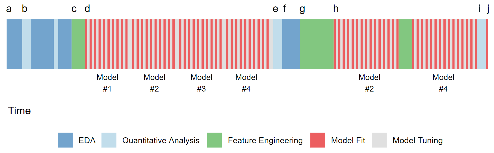

Chương 6 Nguyên lý dự báo
Quá trình dự báo: Trong thực tế, quá trình dự báo diễn ra như sau

6.1 Các nhóm thuật ngữ cần nhớ
- Độ biến động (variance) vs. độ chuẩn xác (bias):
variancelà độ biến động của mô hình so với dữ liệu, đo độ nhạy cảm của các tham số trong mô hình khi thay đổi dữ liệu. Nói cách khác, một mô hình được gọi là biến động lớn khi dữ liệu mô hình thay đổi sẽ dẫn đến một sự thay đổi lớn trong mô hình. Ví dụ, mô hình sử dụng trung vị làm biến dự báo sẽ ít biến động hơn khi sử dụng giá trị trung bình.biasđo độchuẩn xáccủa mô hình. Một mô hình được gọi làbiasthấp khi kết quả dự báo gần với kết quả thực tế và ngược lại. Các mô hình cóbiasthấp có khả năng thích ứng với dữ liệu tốt, các mô hình như cây quyết đinh, neural network thuộc dạng này.
6.2 Lưu ý
- Khi xây dựng mô hình, hiệu ứng của các biến dự báo (predictor) có thể lớn hơn thuật toán rất nhiều
- Với cùng một nhóm các biến dự báo đúng thực tế, các thuật toán khác nhau có thể đưa ra các kết quả tương tự nhau.